Two stylesheets
theme.css holds the tokens, the gradient stops and the glass recipe; global.css holds everything that uses them.
Glassmorphism
Glassy puts every card, bar and dialog on a translucent sheet with a bright edge, floats two blurred orbs behind the page, and rolls a strip of waves along the bottom of the hero. Nothing else changes: the markup is the same as every other template here.
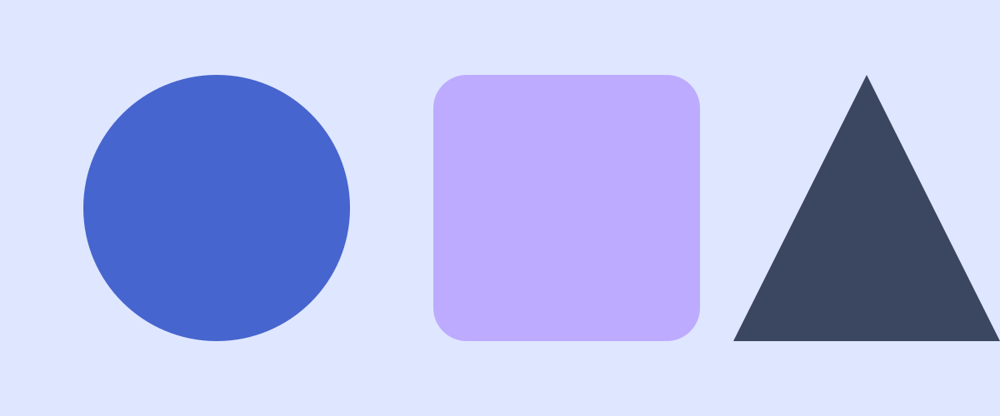
Take the css/, js/theme.js and assets/ folders and you have the whole template. The three cards below are the ordinary card, with an image, an icon, and neither; each is a pane of glass and the gradient shows through it.
theme.css holds the tokens, the gradient stops and the glass recipe; global.css holds everything that uses them.
A lavender sky by day, deep navy by night. The gradient is three colour tokens, so it flips with everything else.
The palette block in theme.css pastes straight into a retoken site. See the tokens.
Horizontal cards put the media on the left or, with card-media-end, on the right. On a narrow screen they stack.
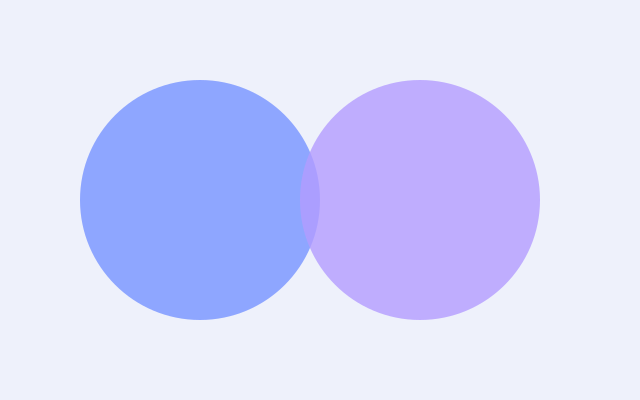
The image takes a little over a third of the width and the text takes the rest.
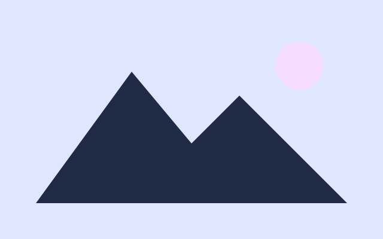
The same card with the order flipped. The markup is the same; only one class differs.
Every template has one feature card with an effect that suits it. Glassy's tilts back a few degrees and its glass brightens when you hover it.
A fixed perspective tilt, done in CSS. Nothing follows the cursor; it does not need to.
The fifty-fifty block gives an image half the width and the text the other half. Add fifty-fifty-reverse and the image moves to the right.
Image left
A heading, a paragraph and a single call to action. In this template the block is one wide pane.
How it is built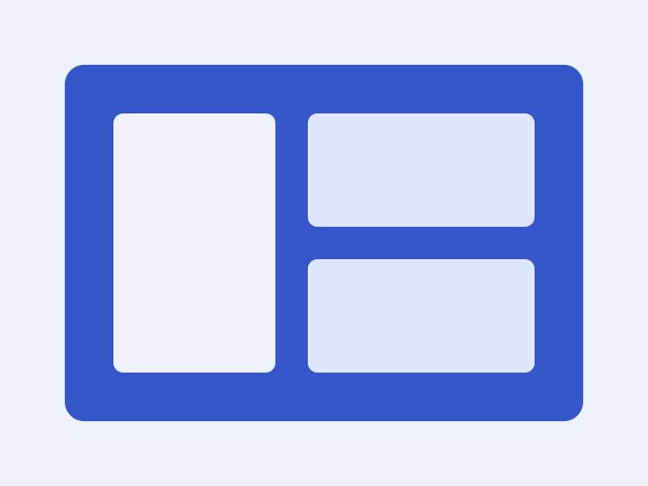
Image right
Alternate them down a page and the eye is led from side to side without any extra styling.
Read the docsAccordions are native <details> elements. Give a group of them the same name and opening one closes the others, with no script.
No. Copy the folder, link the two stylesheets and the one script, and write HTML.
Three things: a translucent background, a backdrop-filter that blurs whatever is behind it, and a one-pixel edge brighter than the sheet. Every panel here has all three.
Anything from 2024 on: the template relies on light-dark(), :has(), popovers, exclusive accordions and backdrop-filter.
A single accordion stands on its own.
css/, js/theme.js and assets/. The README lists it.
Click any image. The lightbox is a <dialog> on frosted glass; the arrows and the thumbnails are plain links, and Esc closes it.
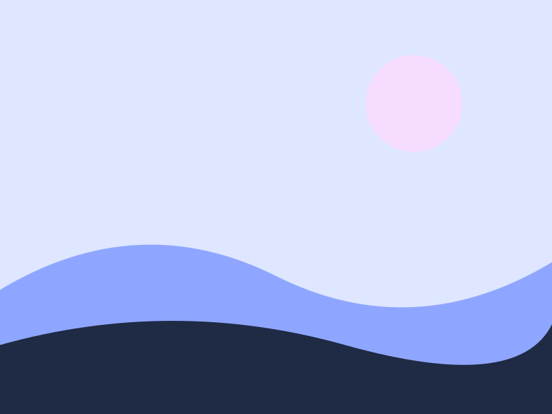
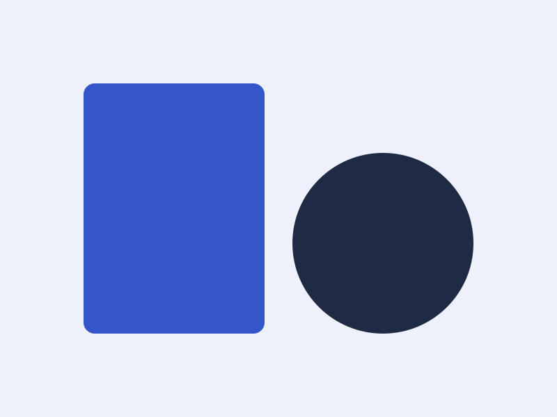
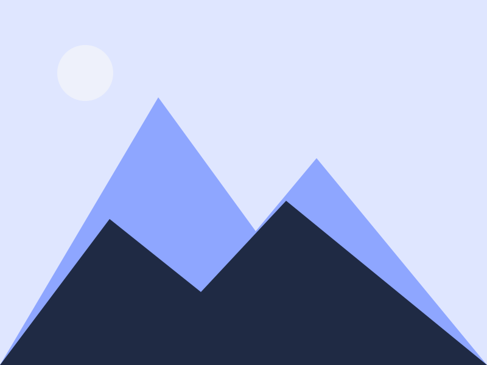
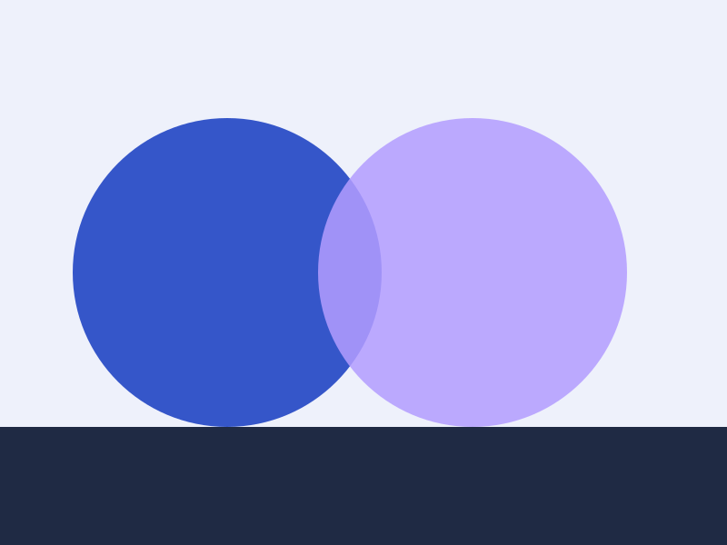
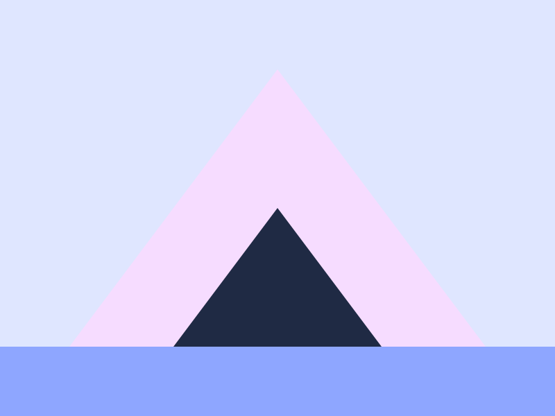
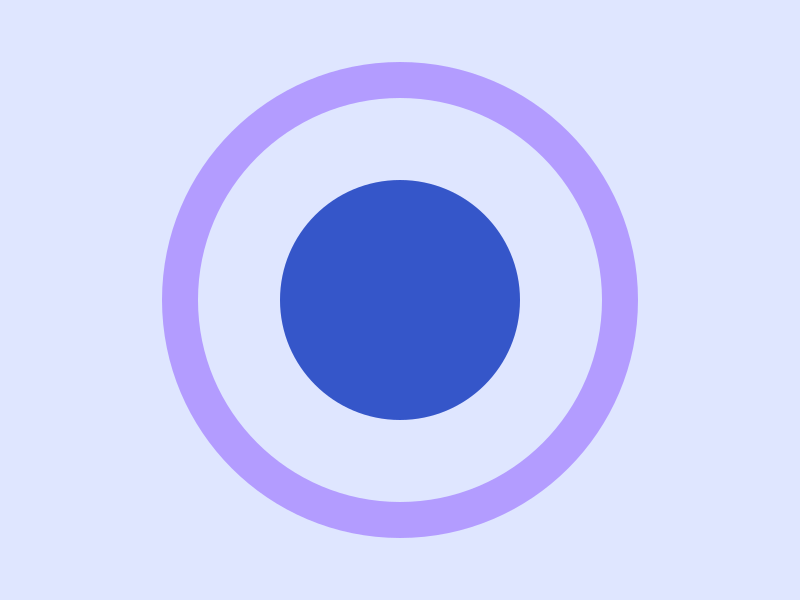
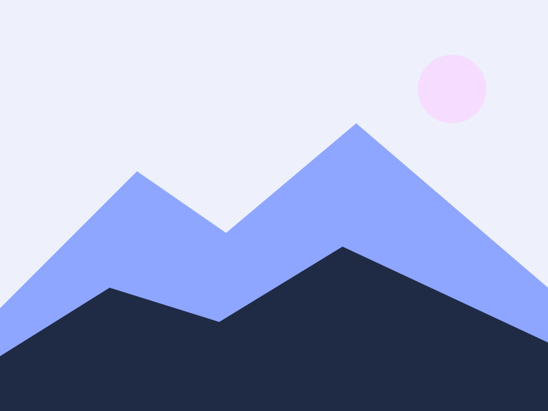
Buttons are pills of glass that lift on hover; the primary one carries a gradient. The switch thumb is the accent. Badges and banners are small panes.
Tables sit on a pane that scrolls sideways when they are wider than the page.
| Component | Glass | Script | Docs |
|---|---|---|---|
| Card | standard, brightens as the feature card | none | cards |
| Navbar | standard, blurred | none | navbar |
| Dialog | strong, over a blurred backdrop | one line | dialog |
| Waves | none: four layers of the wave colour | none | flare |
| Theme toggle | strong | theme.js | theme |
Dialogs are native too. The button below opens one; the dialog closes itself through a form.
Prose is what most pages are made of, so .prose styles every construct a markdown renderer produces; code blocks are small panes of their own. The blog post page runs the full test document through it; defaults shows every bare element.
Glass is only glass if you can see something through it. Put colour behind it and let it move.